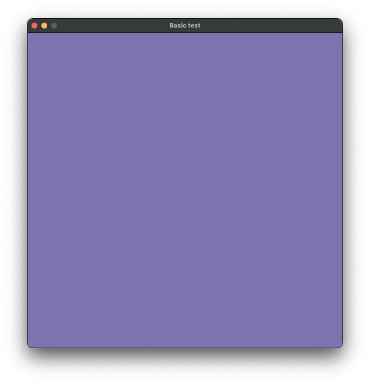
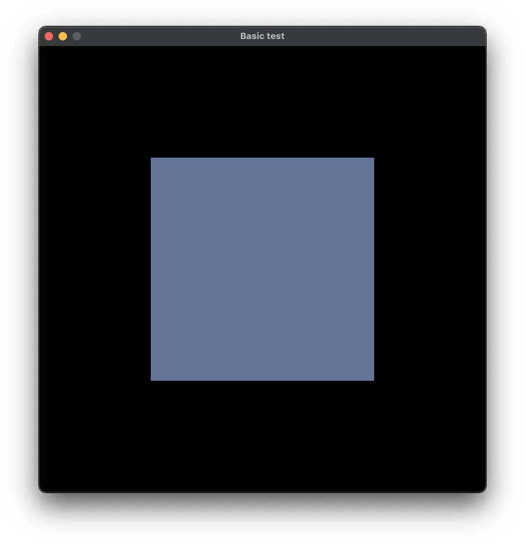
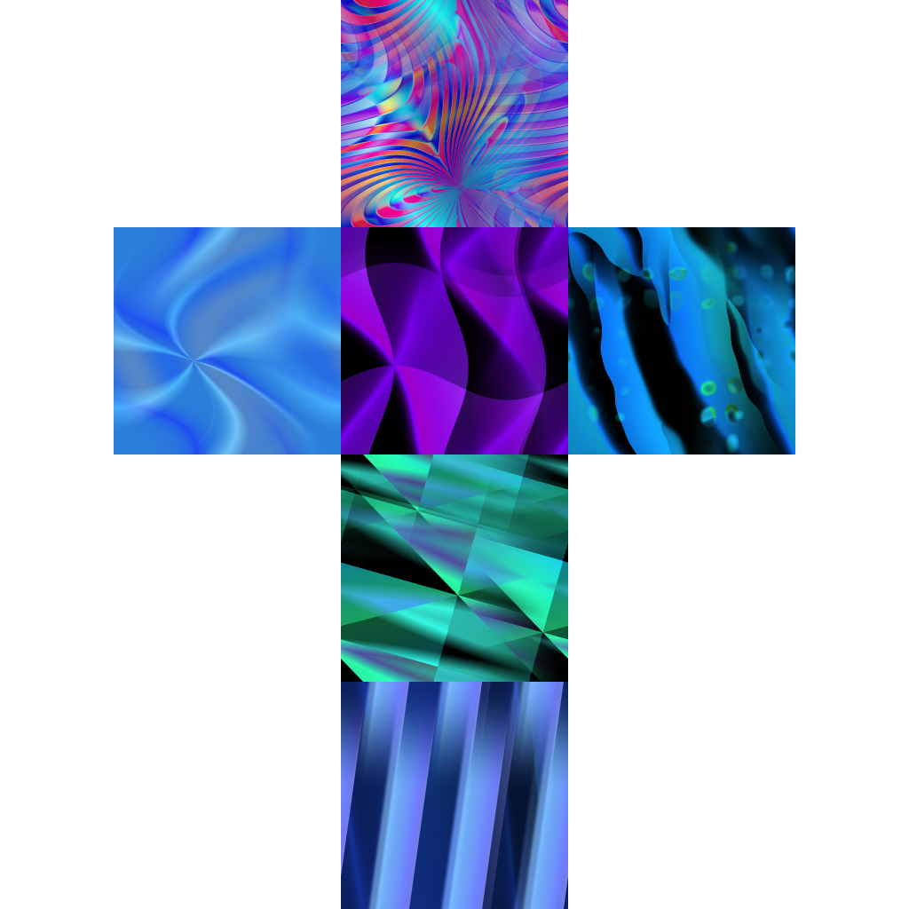
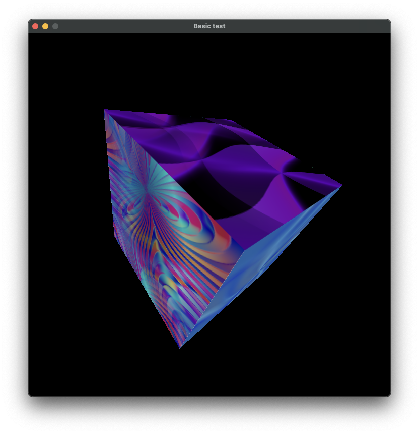
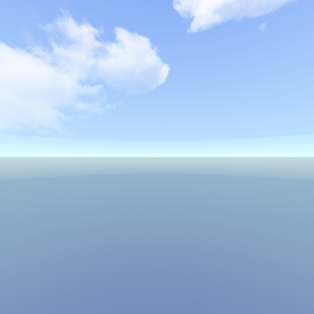
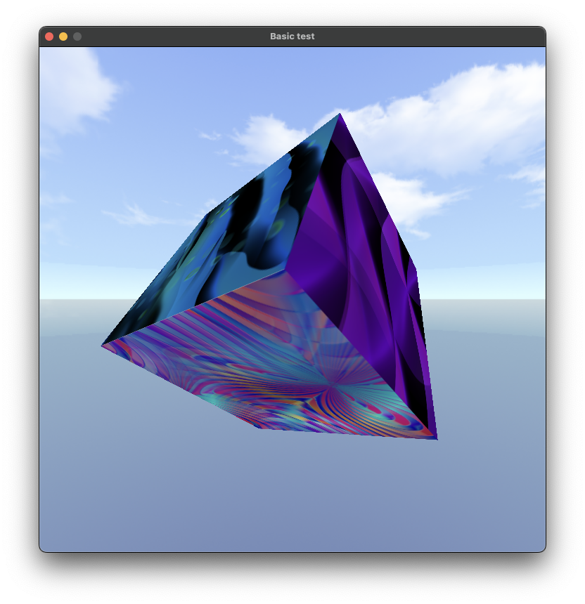

This document specifies, explains and demonstrate examples of usage of the Icosphere Game Library, a library dedicated to simplify and accelerate the creation of game applications using C/C++ languages. Just to keep the user focused on the core features of the application, rather than technical details under the hood, automatically doing the complex tasks such as loading models, textures shaders into memory, rendering objects, perform matrix calculations, handle windowing system independent of the target platform and handle user input via mouse, keyboard or joystick.
Capabilites
The Icosphere Game Library is capable to offering a three dimensional rendering context through a windowing system, achieved by the built-in SDL 2.0 library, a very popular Windowing system used by many AAA games.
The rendering context is achieved with support for hardware graphics acceleration, using OpenGL 3.3+. Direct rendering commands are not available due to these commands becoming deprecated in OpenGL version after 3.0.
OpenGL 3.3+ and OpenGL ES 3.0+ are the only graphics libraries supported in the Icosphere Game Library.
Depending of the target system, the GPU rendering may be or may not be activated. In cases of embedded or very old devices, software only rendering may be the only option available. Consult the platform you want to develop for specific details.
Other capabilities are present if form of file loaders for 3D models, supporting different model formats, textures and shaders.
The input system is implemented by SDL, every action is captured and send to callback functions for further implementation, depending of the needs.
Playback of audio files is supported by SDL, but yet not implemented by Apple Game Library.
Device Targets
The Icosphere Game Library is designed to offer a large set of supported operating systems and devices types. Future compatibility with newer operating systems versions may be limited or deprecated due to enterprises practicing closed environment actions, such as depreciating OpenGL, Apple is the one of most notorious for such actions.
The library offers support to be built using different compilers, including Emcripten, the most popular compiler for building projects to WebAssembly and therefore being transformable to a executable inside a web browser:
Officially supported Operating Systems include:
Apple macOS, from 10.5 to 13.0;
Linux systems with kernel 3.4 or superior;
Microsoft Windows 7 or superior;
Support for mobile devices such as Android or iOS is limited by the internet browsers that are installed on these systems. The officially supported internet browses include:
Apple Safari, from 12.0 or superior;
Google Chrome, from 99 or superior;
Mozilla Firefox, from 75 or superior;
Other Operating systems based on unix or other internet browsers based on chromium may be supported as well, but there are a non-zero chance of failure in some way.
The library offers a large set of built-in functions, present if form of functions grouped by namespaces, classes from object oriented programming, and data access from structures.
Some resources are design to be used as functions that defines a state-like machine and some are design to be in form of classes to give the liberty of being inherited or instantiated multiple times.
Core Subsystem
The kernel of the application is the core subsystem, composed by:
Window module, responsible for manage the windowing system with help of SDL, is a state-like machine meaning that is not necessary to instantiate as a class object, but is necessary to call a `initialize(width, height, title) function and point a callback function for game logic. The Window Module implements the main application loop, with each maintain the Rendering, Logic, Input detection and Time management. Some calls inside the main loop are pointed to callback functions that the developer can implement in their side with each can contain game logic.
Render module, responsible for initialize the rendering context and respond for draw calls;
Shader module, responsible for interacting with the OpenGL shader system, setting uniform variables to the shader programs, before them running on the GPU. Every Entity data sent to the GPU passes through the Shader module.
VAO module, (Vertex Array Object) responsible for setting a data structure inside the GPU memory, with each contains the model data.
VBO Module, (Vertex Buffer Object) responsible for setting blocks of data structures inside the GPU memory, with each contains the model data.
EBO Module, (Element Buffer Object) responsible for organizing model data in indices for faster rendering on by the GPU.
World Subsystem
The World subsystem offers an abstraction of the real world that can be implemented by the core subsystem. Composed by:
Entity class, the Entity class is the most abstract way to materialize any kind of object in the scenery, it contains basic proprieties and functions to move, rotate and scale the object, it also contains references to any kind of textures, models and shaders that the Entity may have during his life cycle, theses properties are optionals, meaning that an Entity can exist without being composed by any material or behavior. In the Icosphere Game Library, a shader program is normally attached in an Entity object, offering the opportunity to determine how the model should absorve and reflect light, or emitting light if that is the case in mind, as well being deformed by external events and many other possibilites.
Camera class, is the component that offers a point of view in relationship with other Entities that may be present in the world. The camera matrix is basically the abstraction of the world, when the Camera moves, all the Entities are what really being moved.
Projection class, is the component that set up how the world are being projected in Camera, there are two forms of projection available in the library, the Perspective and Orthogonal projections.
There is a question regarding the nature of the implementation of a Camera in a scenery, generally in other game libraries or engines, a Camera can be a variation of an Entity. In Icosphere Game Library the Camera is the second element of the world transformation triad, composed by an Entity, a Camera and a Projection, you can’t have an euclidean world without these 3 components, (more specifically, they matrices), being calculated by the rendering system.
The library offers some derivatives of the Entity class, available for use in the game implementation, with built-in features that may become useful for speed-up the development:
Text class, can be used to present text information inside the rendering context;
Light class, can be used to render object that emit light, their light can affect other objects depending of the shader program attached to the other Entities.
The library offers some derivatives of the Camera class, available for use in the game implementation, with built-in features that may become useful for speed-up the development:
Debug Camera, can be used to freely move through the scenery without any barriers with the use of a mouse;
Resource Loader Subsystem
The Loader Subsystem is a series of modules that support reading of different file formats, that can be used by the rendering system to load 3D models, textures, shaders, and other file formats. The developer can implement customized file loaders with help of the File Loader Module.
The Loader Subsystem is composed by:
FileLoader Module, It’s a generic File loader that returns the file content in string format (char*), it is necessary to inform a subfolder that the file has to be located, in the root directory where the main application is located. The path from the system root through the executable is automatically managed by the File Loader module.
Texture Loader Module, with help of stb_image library dependency, the Texture Loader can read the most conventional image formats to the application. You can consult the stb_image documentation for more details. The module offers two ways of loading, the 2D format, with each is the recommend way to load a texture, and the cube map texture used to load texture in 3D, most suitable for cubes and skyboxes.
Model Loader Module, this module can load an image in ModelData data structure to the rendering context. Please note that the Model loader by itself cannot load directly a model file to the rendering context. This behavior is due the multiple formats available to store 3D models in files. So the loading functions are handled by specific modules that helps this loader to read a model. The supported file formats:
Wavefront Object can be spotted by the file format .OBJ. is a geometry definition file format first developed by Wavefront Technologies for its Advanced Visualizer animation package. The support for this format is limited due to vastly different ways available to store information in this format, see the Wavefront Object specification for more details.
Stanford Object can be spotted by the .PLY extension. The Stanford Object is a computer file format known as the Polygon File Format or the Stanford Triangle Format. It was principally designed to store three-dimensional data from 3D scanners. The support for this file format specification is almost full, it’s the recommended way to load 3D models in Icosphere Game Library.
Shader Loader Module, responsible for loading shader text programs from the system into memory, compiling, linking to the rendering context and checking for possible syntaxes errors committed by the developer. Note that the shader programs are compiled and check in execution time and load to the GPU device. Another feature provided by the Shader Loader is the automatic conversion between GLSL versions for desktop and mobile/web versions. So a GLSL program, with #version 330 can be automatically changed to #version 300 es in compile time.
Input Subsystem
The input subsystem is responsible to capture any kind of event emitted by the user, despite the specification of SDL Events being able to capture even screen update events, the Icosphere Game Library does not yet implement this feature, only, keyboard, mouse and generic joystick events.
The submodule has the following behavior: The submodule structure serves as an interface to the developer with each can further implement callback functions to handle submodule related events. The calls are made by the Input module, with each check if the developer has implemented the functions, if is so, the function are called passing some event related data.
Keyboard Module: Keyboard related events, such as KeyUp and KeyDown;
Mouse Module: Mouse related events, such as ClickUp, ClickDown, Movement and Scroll;
Joystick Module: Is specified in the code but it’s not yet implemented in the library;
In this section there are present some examples to how initialize the system and feed up with Entities, Cameras, Projections, Game Logic, Input Handling etc.
Creating a Empty Window
To create a minimum functional environment for developing games we will need to initialize the core subsystem of the library first.
Then we create the windowing system, providing a width, height and title to the Window::initialize(width, height, title);. The width and height can be any unsigned short number up to 65535, the title can be defined as a const char*.
During the main loop, the library can call a not yet defined function with each we can place the game execution logic, we can tell the windowing system what function will be by passing the address of it to Window::setLoopCallback(mainLoop);.
Next, we initialize the rendering system, setting a rendering context for the window, but not yet started the rendering loop.
Finally, we start the rendering loop by calling Window::startLoop(), after that, we will enter in inifite loop, only exing after manually close the window.
On execution, we are gifted with a new window tinted with a purple-ish color. If you need help to compile this example, check the "Compile and Link to a Game Project" section.

A system window rendering a purple-ish background.
Rendering an Object
To render an object, we will need to load a model file, a simple shader program, instantiate a Entity, a Camera and a Projection object, and render-it in the mainLoop function. In this case we will load a cube into the rendering context.
Sounds like a lot of things, but if we want to render anything more than a color, we will have to construct a scenery for our presentation.
In the early versions of OpenGL we can simply give some commands to draw some triangles and we are technically done. But these methods are deprecated for already many years. The modern way requires some additional work, but the return of the investment will pay the hassle.
Before continuing:
Create a folder/directory in the root of your source code file named models. Inside you can place the cube.ply file. If you dont't have the model file, you can very easily create one with Blender. Dont't forget to save as .ply format.
Create a folder/directory in the root of your source code file named shaders. Inside you can place the following code:
Continuing from the example before, We start initializing the Input subsystem by providing the executable path string to the FileLoader::setProgramSystemPath(char*);.
Next, we invoke the ShaderLoader module to load the shaders into the memory. One thing to note is that all shaders informed must be located at subfolder called shaders. If all goes well, the OpenGL context will return to us a ticket, with each is a number reference to the content loaded into GPU.
We also need to instantiate a cube object, based on a Entity class, attach the shader reference to it, set the initial positions and scales, and finally attach a 3D model to it, the model contents are stored in the GPU's memory, therefore, you cannot have direct access via CPU. the mesh property in Entity are just a bunch of tickets that OpenGL give to us when we want to draw with the model. We simply pass the id's to the OpenGL rendering context and he will locate the model and rendering for you.
in the mainLoop function we tell our shader module to activate the shader program we want to use. In Shader::setUniformModelViewProjection(Entity*, glm::mat4, glm::mat4); we pass the Entity to the rendering context, as well the Camera and the Projection matrix, this is necessary to inform what object we want to render, with each camera will be observed, and what projection should be appeared.
Finally, we tell the Render to draw the element.

A system window rendering a blue-ish cube in a dark background.
But, as you may notice, this cube, dosen't look like a cube.. This happen because of the absence of a Camera and a Projection components in our world. To be able to see the other side of the cube, we will need to create a Camera and a Projection in our world, and set the camera to rotate the view angle a little bit.
There is another approach to view the other faces of the cube. which is simple tell the cube to rotate, but again, with the absence of a camera and a projection things will not be drawn as the way we should expect.
Let's begin to add the camera and a projection for our world:
What if we want to give this cube a more detailed surface? We can do by attaching a texture for the model. With the TextureLoader Module, we can pass a name for the texture file, and get a openGL id for that texture which we can attach to a Entity and rendering it.
The process of rendering with a texture must be done inside the GPU, so we will have to make some additional changes to the shaders:
We will use a cubemap texture contained in one image file, on the moment of rendering, the texture will wrap our cube, just like making a paper cube and mounting it. Keep in mind that for other models different than a cube, this texture may not fit correctly, You can count with help of models editors like Blender to make a texture file that can wrap your model correctly.

A cubemap texture representing abstract figures for each face.
You can save this texture in your project folder, it's ready for use. Remember, texures files are stored in a subfolder named textures, in your executable root directory/folder.
Based on the previous example code, we will continue from there:
It's more simple to show the whole code with emphasis on waht was added, removed, or modified.
If every thing was done correctly, the cube will be shown to us.

A rendered cube with some nice textures painted on.
Skyboxes
We got a nice texture cube back on our previous example, but everything outside looks so empty, our World seems like a limbo, and we are in the middle of there. We can think in various possible solutions for this, one of they are setting a color for our background, but this won't solve the problem. In these cases, the skybox is the solution.
The skybox it's just a cube with a cubemap texture attach to it. The trick to give a sense of sky in our world, is in the shader program. The skybox cube dosen't behave in the same way as other entities do. In the rendering time, we begin inside of the skybox cube, wherever which side or how much we move, the skybox will always move with us, every other entity will be rendered on top of the skybox. That permit us to yet, be able to see other things.

One of the skybox faces.
To be able to render a skybox, we will need a customized shader, written specificly for that type of need.
And once everything goes right, the window will comeback for us, in a new world with a nice blue sky.

A rendered cube with textures and a rotating blue sky behind it.
User Inputs and Debug Camera
It's great to build a rich and detailed world, but sometimes, you could wish that with some button pushes and some mouse movements you can be able to see more angles of the world. This is possible with the Input System, combined with a Debug Camera.
The Input System allows you, as a Icosphere Game Library user and a developer, to get inputs details from the final user to the application. The calls must be set up using callback functions. We will see how to do that later in the code bellow.
The Debug Camera it's a built-in Camera inherited class that gives the ability to user to free explore the world. It's called Debug Camera because of his behavoir, present in past released games, mainly used by developers to get a better view of what is going on with the game.
Let's see how the code looks like, the source it's getting bigger as more resources we put into it. The green lines indicates code that was added in relation of the source of the previous example.
Once everything goes well, you should be able to see around with the debug camera, just with your mouse.
A video showing the user controlling the camera's rotation around cube with the mouse.
Text on Screen
The library offers a basic text rendering system, whitch supports ASCII characters, as well break lines, at relative low cost of performace. To implement this system, we will need specific shaders for that.
textRendering.vs
#version 330in vec3 positionVec;in vec3 texCoord;// For certain WebGL implementations, the max number of uniform elements is 256;uniform mat4 modelMatrix;uniform mat4 viewMatrix;uniform mat4 projectionMatrix;uniform int char[120];uniform vec2 pos[120];out vec3 fragColor;out vec3 outTexCoord;out float character;void main(void) { vec2 newPosition = vec2(positionVec.x + pos[gl_InstanceID].x, -positionVec.y + pos[gl_InstanceID].y); gl_Position = projectionMatrix * modelMatrix * vec4(newPosition, 0.0, 1.0); outTexCoord = texCoord; character = float(char[gl_InstanceID]);}
A title to be located at the top of the window, maximum length of 128 bytes.
Return value
void
Window::setLoopCallback
The developer can pass a pointer to a function to handle the game logic. This function will be called multiple times in a span of a second, depending of the CPU limits of the device. If you dont't set this you can't have access to the mainLoop, therefore not being able to calculate the game login in real time.
Specification
void Window::setLoopCallback(void (*mainLoop)())
Parameters
mainLoop
It's the function pointer, the reference will be called after the rendering loop starts.
Return value
void
Window::startLoop
Starts the rendering loop. Before calling this function, be sure to initialize the window system, the render system and to customize the loop with game logic, set a callback function Window::setLoopCallback(void (*mainLoop)). But that is optional.
Specification
void Window::startLoop()
Parameters
none
Return value
void
FileLoader::setProgramSystemPath
Initialize the Loader subsystem by providing the executable path string, It need to point to the executable path location in system.
Read the file pointed by the path. the model file must be located in a subfolder named models in the executable root directory. It's only necessary to point the filename + extension.
The name of the model file to be loaded, The module supportes .ply and .obj files.
relatedShaderId
Related shader id from the entity object.
Return value
struct Mesh*
A struct contained a bunch of tickets given by the OpenGL context. these tickets would be useful later to point to the OpenGL rendering context with model we want to render later.
The ticket are just a GLuint (aka unsigned int) number from zero to 2ˆ32;
ShaderLoader::load
Load the shader file to the rendering context . Keep in mind that the texture content will be located in the GPU and discarted by the CPU context. The shader file must be located in a subfolder named shaders in the executable root directory. It's only necessary to point the file name + extension. Example: vertexShader.vs
The name of the vertex shader file. it should have a .vs extension.
fragmentFileName
The name of the fragment shader file. it should have a .fs extension.
Return value
shader program id
Given the vertex and fragment shaders, these two are compiled, checked and linked together, forming a shader program, the shader program are stored in the rendering context and a shader program id is returned. It is a ticket with point to the program stored on the GPU. Dont't lose your ticket to avoid potential memory leaks.
The ticket are just a GLuint (aka unsigned int) number from zero to 2ˆ32;
TextureLoader::load2d
Load a 2D texture to the rendering context pointed by a struct Image*. Keep in mind that the texture content will be located in the GPU and discarted by the CPU context.
Given the texture file, the file is loaded into the rendering context and a texture id is returned. It is a ticket with point to the texture stored on the GPU. Dont't lose your ticket to avoid potential memory leaks.
The ticket are just a GLuint (aka unsigned int) number from zero to 2ˆ32;
TextureLoader::loadCubemap
Load a 3D cubemap texture to the rendering context pointed by a vector of struct Image*. Keep in mind that the texture content will be stored in the GPU and discarted by the CPU context.
A std::vector also known as a List<String> if you are more familiar with other languages. It's a list of struct Image*.
Return value
texture id
Given the list of texture names, these files are loaded into the rendering context and a unique texture id is returned. It is a ticket with point to the cubemap texture stored on the GPU. Dont't lose your ticket to avoid potential memory leaks.
The ticket are just a GLuint (aka unsigned int) number from zero to 2ˆ32;
TextureLoader::loadFromFile
Load a texture file to the CPU context pointed by a given name. The texture file must be located in a subfolder named textures in the executable root directory. It's only necessary to point the file name + extension. Example: box.png.
A constant char whitch holds the texture file name with extension.
Return value
struct Image*
Given the texture file name a struct Image is returned, which conatins the raw image data, width, height and color channels. This struct can be used later to do some treatment over the image data, giving the liberty to do all kinds of distortions, or simply invoke the TextureLoader::load2d or TextureLoader::loadCubemap to send the data to the Rendering device.